Python: Matplotlib
Objectif de cette section
L’un des facteurs de succès de Python résident dans ses bibliothèques spécialisées.
L’objectif de cette section est de se familiariser avec la bibliothèque du language Python ``MatPlotLib``.
Data visualisation with MatPlotlib
numpy, dans cette section, nous allons découvrir un nouveau module indispensable à la programmation scientifique: matplotlib.numpy et matplotlib sont les briques de bases sur lesquels de nombreux projets s’appuient. Elles suffisent normalement pour toute analyse de petits jeux de données.matplotlibest un module performant pour la génération de graphiques en 2D et 3D:syntaxe très proche de celle de Matlab,
supporte texte et étiquettes en \(\LaTeX\),
sortie de qualité dans divers formats (PNG, PDF, SV, EPS…),
interface graphique interactive pour explorer les figures.
matplotlib est très riche (et complexe). Il existe une documentation fournie avec de nombreux d’exemples.numpy, pour utiliser matplotlib il faut commencer par l’importer.[486]:
import numpy as np
import matplotlib.pyplot as plt
[487]:
# commande pour activer l'affichage. Pas nécessaire quand on travaille en local sur des versions de Jupyter Notebook récentes.
%matplotlib inline
On peut utiliser la librairie matplotlib pour visualiser des tableaux 1D sous la forme de courbe:
Les différents types de graphiques
Voici une liste de graphiques à connaître.
line plots
Les graphiques en ligne
Quelle utilisation ?
Les line plots sont extrêmement utiles pour les données de types Séries Temporelles.
Le code
Pour pouvoir créer un line plot, il vous suffira d’utiliser :
plt.plot(x, y)
Pour afficher le graphique on utilise :
plt.show()
C’est la méthode la plus simple pour créer un graphique à l’aide de Matplotlib.
Dans l’exemple ci-dessous on visualise la fonction \(f(x) = sin(2\pi{x})\) sur l’intervalle \([0, 2]\)
[488]:
# Création de données sinusoïdales
t = np.arange(0.0, 2.0, 0.01)
s = 1 + np.sin(2 * np.pi * t)
# Création du LinePlot
plt.plot(t, s)
plt.show()
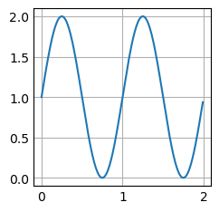
Paramètres utiles
Quelques paramètres utiles pour changer l’aspect de la figure
color
[489]:
# Changer la couleur
plt.plot(t, s, color="red")
plt.show()
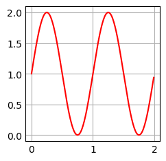
linestyles
[490]:
# Changer le style de ligne
plt.plot(t, s, linestyle="-.")
plt.show()
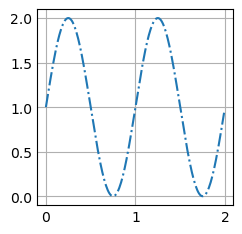
Vous avez le choix de plusieurs styles de lignes dont voici quelques exemples :
linestyle: {'-', '--', '-.', ':', '', ...}
Le paramètre linestyle peut aussi s’écrire ls
Exercice:
Tracer la courbe de \(f(x) = 4 + 2 sin(2x)\) pour 100 valeurs x de l’intervalle [0, 10].
Vous utiliserez la couleur et la ligne de style de votre choix.
SOLUTION
[491]:
# Création de données sinusoïdales
x = np.linspace(0, 10, 100)
y = 4 + 2*np.sin(2 * x)
# Création du LinePlot
plt.plot(x, y, color='grey', linestyle=':')
# Affichage du graphique
plt.show()
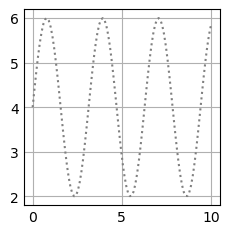
lw
Taille de la courbe en pixel
[492]:
x = np.linspace(0,2,10) # 10 points allant de 0 à 2
y = x**2
# Définition du graphique
plt.plot(x, y , label = 'premier graphique', c ='r', lw = 4, ls = '--')
# Affichage du graphique
plt.show()
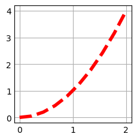
Les bar charts
Les graphiques en barre.
Quelle utilisation ?
Les bar charts sont plutôt utilisés pour observer des éléments de différents groupes, par exemple le taux de réussite au bac selon les différentes villes de France.
Un bar chart se fait grâce à plt.bar()
Le code
Pour pouvoir créer un line plot, il vous suffira d’utiliser :
plt.bar(list_names, list_values)
Pour afficher le graphique on utilise :
plt.show()
[493]:
# Création d'une liste de données
names = ['group_a', 'group_b', 'group_c']
values = [1, 10, 100]
# Création du barplot
plt.bar(names, values)
plt.show()
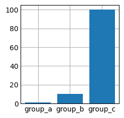
Stacked Bar Plot
Graphiques empilés.
Vous pouvez empiler des bar plot via le paramètre bottom. Pour cela, vous devrez créer deux lignes de bar plot de la façon suivante :
[494]:
# Création des données
names = ['group_a', 'group_b', 'group_c']
values_1 = [1, 10, 100]
values_2 = [7, 3, 10]
# Création des barplots
plt.bar(names, values_1)
plt.bar(names, values_2, bottom=values_1)
plt.show()
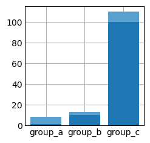
[495]:
# Création des données
names = ['group_a', 'group_b', 'group_c']
values_1 = np.array([1, 10, 100])
values_2 = np.array([7, 3, 10])
values_3 = np.array([5, 8, 3])
# Création des barplots
plt.bar(names, values_1)
plt.bar(names, values_2, bottom=values_1, color='red')
plt.bar(names, values_3, bottom=values_2 + values_1, color='green')
plt.show()
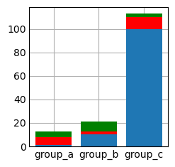
Orientation des barres
Vous pouvez choisir l’orientation des barres en utilisant cette fois : plt.barh au lieu de plt.bar.
La méthode fonctionne de la même manière que celle plus haut.
[496]:
# Création de données aléatoires
names = ['group_a', 'group_b', 'group_c']
values = [1, 10, 100]
# Crétion du graphique en barres
plt.barh(names, values_1)
plt.show()
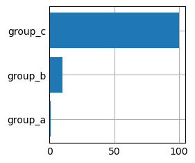
Les histogrammes
Quelle utilisation ?
Les histogrammes sont très utiles pour montrer une distribution. Par exemple, la répartition des revenus en fonction de l’âge.
Le code
plt.hist(x, bins)
Pour afficher le graphique on utilise :
plt.show()
[497]:
# Création d'une liste de 100.000 valeurs tirées aléatoirement selon une loi Normale
mu, sigma = 100, 15
x = mu + sigma * np.random.randn(100000)
# Création de l'histogramme
plt.hist(x, 50)
# Affichage de la figure
plt.show()
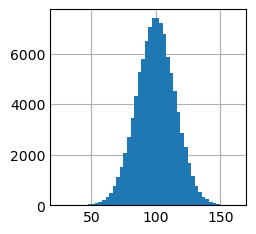
[498]:
plt.hist?
Signature:
plt.hist(
x: 'ArrayLike | Sequence[ArrayLike]',
bins: 'int | Sequence[float] | str | None' = None,
range: 'tuple[float, float] | None' = None,
density: 'bool' = False,
weights: 'ArrayLike | None' = None,
cumulative: 'bool | float' = False,
bottom: 'ArrayLike | float | None' = None,
histtype: "Literal['bar', 'barstacked', 'step', 'stepfilled']" = 'bar',
align: "Literal['left', 'mid', 'right']" = 'mid',
orientation: "Literal['vertical', 'horizontal']" = 'vertical',
rwidth: 'float | None' = None,
log: 'bool' = False,
color: 'ColorType | Sequence[ColorType] | None' = None,
label: 'str | Sequence[str] | None' = None,
stacked: 'bool' = False,
*,
data=None,
**kwargs,
) -> 'tuple[np.ndarray | list[np.ndarray], np.ndarray, BarContainer | Polygon | list[BarContainer | Polygon]]'
Docstring:
Compute and plot a histogram.
This method uses `numpy.histogram` to bin the data in *x* and count the
number of values in each bin, then draws the distribution either as a
`.BarContainer` or `.Polygon`. The *bins*, *range*, *density*, and
*weights* parameters are forwarded to `numpy.histogram`.
If the data has already been binned and counted, use `~.bar` or
`~.stairs` to plot the distribution::
counts, bins = np.histogram(x)
plt.stairs(counts, bins)
Alternatively, plot pre-computed bins and counts using ``hist()`` by
treating each bin as a single point with a weight equal to its count::
plt.hist(bins[:-1], bins, weights=counts)
The data input *x* can be a singular array, a list of datasets of
potentially different lengths ([*x0*, *x1*, ...]), or a 2D ndarray in
which each column is a dataset. Note that the ndarray form is
transposed relative to the list form. If the input is an array, then
the return value is a tuple (*n*, *bins*, *patches*); if the input is a
sequence of arrays, then the return value is a tuple
([*n0*, *n1*, ...], *bins*, [*patches0*, *patches1*, ...]).
Masked arrays are not supported.
Parameters
----------
x : (n,) array or sequence of (n,) arrays
Input values, this takes either a single array or a sequence of
arrays which are not required to be of the same length.
bins : int or sequence or str, default: :rc:`hist.bins`
If *bins* is an integer, it defines the number of equal-width bins
in the range.
If *bins* is a sequence, it defines the bin edges, including the
left edge of the first bin and the right edge of the last bin;
in this case, bins may be unequally spaced. All but the last
(righthand-most) bin is half-open. In other words, if *bins* is::
[1, 2, 3, 4]
then the first bin is ``[1, 2)`` (including 1, but excluding 2) and
the second ``[2, 3)``. The last bin, however, is ``[3, 4]``, which
*includes* 4.
If *bins* is a string, it is one of the binning strategies
supported by `numpy.histogram_bin_edges`: 'auto', 'fd', 'doane',
'scott', 'stone', 'rice', 'sturges', or 'sqrt'.
range : tuple or None, default: None
The lower and upper range of the bins. Lower and upper outliers
are ignored. If not provided, *range* is ``(x.min(), x.max())``.
Range has no effect if *bins* is a sequence.
If *bins* is a sequence or *range* is specified, autoscaling
is based on the specified bin range instead of the
range of x.
density : bool, default: False
If ``True``, draw and return a probability density: each bin
will display the bin's raw count divided by the total number of
counts *and the bin width*
(``density = counts / (sum(counts) * np.diff(bins))``),
so that the area under the histogram integrates to 1
(``np.sum(density * np.diff(bins)) == 1``).
If *stacked* is also ``True``, the sum of the histograms is
normalized to 1.
weights : (n,) array-like or None, default: None
An array of weights, of the same shape as *x*. Each value in
*x* only contributes its associated weight towards the bin count
(instead of 1). If *density* is ``True``, the weights are
normalized, so that the integral of the density over the range
remains 1.
cumulative : bool or -1, default: False
If ``True``, then a histogram is computed where each bin gives the
counts in that bin plus all bins for smaller values. The last bin
gives the total number of datapoints.
If *density* is also ``True`` then the histogram is normalized such
that the last bin equals 1.
If *cumulative* is a number less than 0 (e.g., -1), the direction
of accumulation is reversed. In this case, if *density* is also
``True``, then the histogram is normalized such that the first bin
equals 1.
bottom : array-like, scalar, or None, default: None
Location of the bottom of each bin, i.e. bins are drawn from
``bottom`` to ``bottom + hist(x, bins)`` If a scalar, the bottom
of each bin is shifted by the same amount. If an array, each bin
is shifted independently and the length of bottom must match the
number of bins. If None, defaults to 0.
histtype : {'bar', 'barstacked', 'step', 'stepfilled'}, default: 'bar'
The type of histogram to draw.
- 'bar' is a traditional bar-type histogram. If multiple data
are given the bars are arranged side by side.
- 'barstacked' is a bar-type histogram where multiple
data are stacked on top of each other.
- 'step' generates a lineplot that is by default unfilled.
- 'stepfilled' generates a lineplot that is by default filled.
align : {'left', 'mid', 'right'}, default: 'mid'
The horizontal alignment of the histogram bars.
- 'left': bars are centered on the left bin edges.
- 'mid': bars are centered between the bin edges.
- 'right': bars are centered on the right bin edges.
orientation : {'vertical', 'horizontal'}, default: 'vertical'
If 'horizontal', `~.Axes.barh` will be used for bar-type histograms
and the *bottom* kwarg will be the left edges.
rwidth : float or None, default: None
The relative width of the bars as a fraction of the bin width. If
``None``, automatically compute the width.
Ignored if *histtype* is 'step' or 'stepfilled'.
log : bool, default: False
If ``True``, the histogram axis will be set to a log scale.
color : color or array-like of colors or None, default: None
Color or sequence of colors, one per dataset. Default (``None``)
uses the standard line color sequence.
label : str or None, default: None
String, or sequence of strings to match multiple datasets. Bar
charts yield multiple patches per dataset, but only the first gets
the label, so that `~.Axes.legend` will work as expected.
stacked : bool, default: False
If ``True``, multiple data are stacked on top of each other If
``False`` multiple data are arranged side by side if histtype is
'bar' or on top of each other if histtype is 'step'
Returns
-------
n : array or list of arrays
The values of the histogram bins. See *density* and *weights* for a
description of the possible semantics. If input *x* is an array,
then this is an array of length *nbins*. If input is a sequence of
arrays ``[data1, data2, ...]``, then this is a list of arrays with
the values of the histograms for each of the arrays in the same
order. The dtype of the array *n* (or of its element arrays) will
always be float even if no weighting or normalization is used.
bins : array
The edges of the bins. Length nbins + 1 (nbins left edges and right
edge of last bin). Always a single array even when multiple data
sets are passed in.
patches : `.BarContainer` or list of a single `.Polygon` or list of such objects
Container of individual artists used to create the histogram
or list of such containers if there are multiple input datasets.
Other Parameters
----------------
data : indexable object, optional
If given, the following parameters also accept a string ``s``, which is
interpreted as ``data[s]`` (unless this raises an exception):
*x*, *weights*
**kwargs
`~matplotlib.patches.Patch` properties
See Also
--------
hist2d : 2D histogram with rectangular bins
hexbin : 2D histogram with hexagonal bins
stairs : Plot a pre-computed histogram
bar : Plot a pre-computed histogram
Notes
-----
For large numbers of bins (>1000), plotting can be significantly
accelerated by using `~.Axes.stairs` to plot a pre-computed histogram
(``plt.stairs(*np.histogram(data))``), or by setting *histtype* to
'step' or 'stepfilled' rather than 'bar' or 'barstacked'.
File: /opt/anaconda3/lib/python3.11/site-packages/matplotlib/pyplot.py
Type: function
Paramètres utiles
Quelques paramètres utiles pour changer l’aspect de la figure
facecolor
density=True
cumulative=True
[499]:
plt.hist?
Signature:
plt.hist(
x: 'ArrayLike | Sequence[ArrayLike]',
bins: 'int | Sequence[float] | str | None' = None,
range: 'tuple[float, float] | None' = None,
density: 'bool' = False,
weights: 'ArrayLike | None' = None,
cumulative: 'bool | float' = False,
bottom: 'ArrayLike | float | None' = None,
histtype: "Literal['bar', 'barstacked', 'step', 'stepfilled']" = 'bar',
align: "Literal['left', 'mid', 'right']" = 'mid',
orientation: "Literal['vertical', 'horizontal']" = 'vertical',
rwidth: 'float | None' = None,
log: 'bool' = False,
color: 'ColorType | Sequence[ColorType] | None' = None,
label: 'str | Sequence[str] | None' = None,
stacked: 'bool' = False,
*,
data=None,
**kwargs,
) -> 'tuple[np.ndarray | list[np.ndarray], np.ndarray, BarContainer | Polygon | list[BarContainer | Polygon]]'
Docstring:
Compute and plot a histogram.
This method uses `numpy.histogram` to bin the data in *x* and count the
number of values in each bin, then draws the distribution either as a
`.BarContainer` or `.Polygon`. The *bins*, *range*, *density*, and
*weights* parameters are forwarded to `numpy.histogram`.
If the data has already been binned and counted, use `~.bar` or
`~.stairs` to plot the distribution::
counts, bins = np.histogram(x)
plt.stairs(counts, bins)
Alternatively, plot pre-computed bins and counts using ``hist()`` by
treating each bin as a single point with a weight equal to its count::
plt.hist(bins[:-1], bins, weights=counts)
The data input *x* can be a singular array, a list of datasets of
potentially different lengths ([*x0*, *x1*, ...]), or a 2D ndarray in
which each column is a dataset. Note that the ndarray form is
transposed relative to the list form. If the input is an array, then
the return value is a tuple (*n*, *bins*, *patches*); if the input is a
sequence of arrays, then the return value is a tuple
([*n0*, *n1*, ...], *bins*, [*patches0*, *patches1*, ...]).
Masked arrays are not supported.
Parameters
----------
x : (n,) array or sequence of (n,) arrays
Input values, this takes either a single array or a sequence of
arrays which are not required to be of the same length.
bins : int or sequence or str, default: :rc:`hist.bins`
If *bins* is an integer, it defines the number of equal-width bins
in the range.
If *bins* is a sequence, it defines the bin edges, including the
left edge of the first bin and the right edge of the last bin;
in this case, bins may be unequally spaced. All but the last
(righthand-most) bin is half-open. In other words, if *bins* is::
[1, 2, 3, 4]
then the first bin is ``[1, 2)`` (including 1, but excluding 2) and
the second ``[2, 3)``. The last bin, however, is ``[3, 4]``, which
*includes* 4.
If *bins* is a string, it is one of the binning strategies
supported by `numpy.histogram_bin_edges`: 'auto', 'fd', 'doane',
'scott', 'stone', 'rice', 'sturges', or 'sqrt'.
range : tuple or None, default: None
The lower and upper range of the bins. Lower and upper outliers
are ignored. If not provided, *range* is ``(x.min(), x.max())``.
Range has no effect if *bins* is a sequence.
If *bins* is a sequence or *range* is specified, autoscaling
is based on the specified bin range instead of the
range of x.
density : bool, default: False
If ``True``, draw and return a probability density: each bin
will display the bin's raw count divided by the total number of
counts *and the bin width*
(``density = counts / (sum(counts) * np.diff(bins))``),
so that the area under the histogram integrates to 1
(``np.sum(density * np.diff(bins)) == 1``).
If *stacked* is also ``True``, the sum of the histograms is
normalized to 1.
weights : (n,) array-like or None, default: None
An array of weights, of the same shape as *x*. Each value in
*x* only contributes its associated weight towards the bin count
(instead of 1). If *density* is ``True``, the weights are
normalized, so that the integral of the density over the range
remains 1.
cumulative : bool or -1, default: False
If ``True``, then a histogram is computed where each bin gives the
counts in that bin plus all bins for smaller values. The last bin
gives the total number of datapoints.
If *density* is also ``True`` then the histogram is normalized such
that the last bin equals 1.
If *cumulative* is a number less than 0 (e.g., -1), the direction
of accumulation is reversed. In this case, if *density* is also
``True``, then the histogram is normalized such that the first bin
equals 1.
bottom : array-like, scalar, or None, default: None
Location of the bottom of each bin, i.e. bins are drawn from
``bottom`` to ``bottom + hist(x, bins)`` If a scalar, the bottom
of each bin is shifted by the same amount. If an array, each bin
is shifted independently and the length of bottom must match the
number of bins. If None, defaults to 0.
histtype : {'bar', 'barstacked', 'step', 'stepfilled'}, default: 'bar'
The type of histogram to draw.
- 'bar' is a traditional bar-type histogram. If multiple data
are given the bars are arranged side by side.
- 'barstacked' is a bar-type histogram where multiple
data are stacked on top of each other.
- 'step' generates a lineplot that is by default unfilled.
- 'stepfilled' generates a lineplot that is by default filled.
align : {'left', 'mid', 'right'}, default: 'mid'
The horizontal alignment of the histogram bars.
- 'left': bars are centered on the left bin edges.
- 'mid': bars are centered between the bin edges.
- 'right': bars are centered on the right bin edges.
orientation : {'vertical', 'horizontal'}, default: 'vertical'
If 'horizontal', `~.Axes.barh` will be used for bar-type histograms
and the *bottom* kwarg will be the left edges.
rwidth : float or None, default: None
The relative width of the bars as a fraction of the bin width. If
``None``, automatically compute the width.
Ignored if *histtype* is 'step' or 'stepfilled'.
log : bool, default: False
If ``True``, the histogram axis will be set to a log scale.
color : color or array-like of colors or None, default: None
Color or sequence of colors, one per dataset. Default (``None``)
uses the standard line color sequence.
label : str or None, default: None
String, or sequence of strings to match multiple datasets. Bar
charts yield multiple patches per dataset, but only the first gets
the label, so that `~.Axes.legend` will work as expected.
stacked : bool, default: False
If ``True``, multiple data are stacked on top of each other If
``False`` multiple data are arranged side by side if histtype is
'bar' or on top of each other if histtype is 'step'
Returns
-------
n : array or list of arrays
The values of the histogram bins. See *density* and *weights* for a
description of the possible semantics. If input *x* is an array,
then this is an array of length *nbins*. If input is a sequence of
arrays ``[data1, data2, ...]``, then this is a list of arrays with
the values of the histograms for each of the arrays in the same
order. The dtype of the array *n* (or of its element arrays) will
always be float even if no weighting or normalization is used.
bins : array
The edges of the bins. Length nbins + 1 (nbins left edges and right
edge of last bin). Always a single array even when multiple data
sets are passed in.
patches : `.BarContainer` or list of a single `.Polygon` or list of such objects
Container of individual artists used to create the histogram
or list of such containers if there are multiple input datasets.
Other Parameters
----------------
data : indexable object, optional
If given, the following parameters also accept a string ``s``, which is
interpreted as ``data[s]`` (unless this raises an exception):
*x*, *weights*
**kwargs
`~matplotlib.patches.Patch` properties
See Also
--------
hist2d : 2D histogram with rectangular bins
hexbin : 2D histogram with hexagonal bins
stairs : Plot a pre-computed histogram
bar : Plot a pre-computed histogram
Notes
-----
For large numbers of bins (>1000), plotting can be significantly
accelerated by using `~.Axes.stairs` to plot a pre-computed histogram
(``plt.stairs(*np.histogram(data))``), or by setting *histtype* to
'step' or 'stepfilled' rather than 'bar' or 'barstacked'.
File: /opt/anaconda3/lib/python3.11/site-packages/matplotlib/pyplot.py
Type: function
Exercice: créer un histogramme de couleur verte
SOLUTION
[500]:
# Création d'une liste de 100.000 valeurs tirées aléatoirement selon une loi Normale
mu, sigma = 100, 15
x = mu + sigma * np.random.randn(100000)
# Création de l'histogramme
plt.hist(x, 50, facecolor='g')
# Affichage de la figure
plt.show()
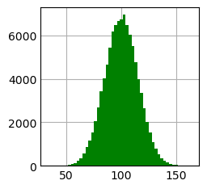
Les pie charts
Les diagrammes circulaires ou camemberts.
Quelle utilisation ?
Les pie charts sont utiles lorsque vous souhaitez montrer la répartition d’éléments faisant partie d’un tout. Typiquement, vous voulez connaître la répartition des hommes et des femmes en France.
Le code
plt.pie(list_of_values, labels)
Pour afficher le graphique on utilise :
plt.show()
Exemple:
[501]:
# Pie chart (chaque élément sera affiché dans le sens inverse des aiguilles d'une montre)
labels = 'Frogs', 'Hogs', 'Dogs', 'Logs'
sizes = [15, 30, 45, 10]
plt.pie(sizes, labels=labels)
plt.show()
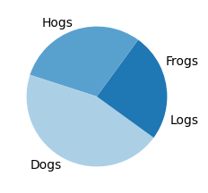
Paramètres utiles
Quelques paramètres utiles pour changer l’aspect de la figure
[502]:
plt.pie?
Signature:
plt.pie(
x: 'ArrayLike',
explode: 'ArrayLike | None' = None,
labels: 'Sequence[str] | None' = None,
colors: 'ColorType | Sequence[ColorType] | None' = None,
autopct: 'str | Callable[[float], str] | None' = None,
pctdistance: 'float' = 0.6,
shadow: 'bool' = False,
labeldistance: 'float | None' = 1.1,
startangle: 'float' = 0,
radius: 'float' = 1,
counterclock: 'bool' = True,
wedgeprops: 'dict[str, Any] | None' = None,
textprops: 'dict[str, Any] | None' = None,
center: 'tuple[float, float]' = (0, 0),
frame: 'bool' = False,
rotatelabels: 'bool' = False,
*,
normalize: 'bool' = True,
hatch: 'str | Sequence[str] | None' = None,
data=None,
) -> 'tuple[list[Wedge], list[Text]] | tuple[list[Wedge], list[Text], list[Text]]'
Docstring:
Plot a pie chart.
Make a pie chart of array *x*. The fractional area of each wedge is
given by ``x/sum(x)``.
The wedges are plotted counterclockwise, by default starting from the
x-axis.
Parameters
----------
x : 1D array-like
The wedge sizes.
explode : array-like, default: None
If not *None*, is a ``len(x)`` array which specifies the fraction
of the radius with which to offset each wedge.
labels : list, default: None
A sequence of strings providing the labels for each wedge
colors : color or array-like of color, default: None
A sequence of colors through which the pie chart will cycle. If
*None*, will use the colors in the currently active cycle.
hatch : str or list, default: None
Hatching pattern applied to all pie wedges or sequence of patterns
through which the chart will cycle. For a list of valid patterns,
see :doc:`/gallery/shapes_and_collections/hatch_style_reference`.
.. versionadded:: 3.7
autopct : None or str or callable, default: None
If not *None*, *autopct* is a string or function used to label the
wedges with their numeric value. The label will be placed inside
the wedge. If *autopct* is a format string, the label will be
``fmt % pct``. If *autopct* is a function, then it will be called.
pctdistance : float, default: 0.6
The relative distance along the radius at which the text
generated by *autopct* is drawn. To draw the text outside the pie,
set *pctdistance* > 1. This parameter is ignored if *autopct* is
``None``.
labeldistance : float or None, default: 1.1
The relative distance along the radius at which the labels are
drawn. To draw the labels inside the pie, set *labeldistance* < 1.
If set to ``None``, labels are not drawn but are still stored for
use in `.legend`.
shadow : bool or dict, default: False
If bool, whether to draw a shadow beneath the pie. If dict, draw a shadow
passing the properties in the dict to `.Shadow`.
.. versionadded:: 3.8
*shadow* can be a dict.
startangle : float, default: 0 degrees
The angle by which the start of the pie is rotated,
counterclockwise from the x-axis.
radius : float, default: 1
The radius of the pie.
counterclock : bool, default: True
Specify fractions direction, clockwise or counterclockwise.
wedgeprops : dict, default: None
Dict of arguments passed to each `.patches.Wedge` of the pie.
For example, ``wedgeprops = {'linewidth': 3}`` sets the width of
the wedge border lines equal to 3. By default, ``clip_on=False``.
When there is a conflict between these properties and other
keywords, properties passed to *wedgeprops* take precedence.
textprops : dict, default: None
Dict of arguments to pass to the text objects.
center : (float, float), default: (0, 0)
The coordinates of the center of the chart.
frame : bool, default: False
Plot Axes frame with the chart if true.
rotatelabels : bool, default: False
Rotate each label to the angle of the corresponding slice if true.
normalize : bool, default: True
When *True*, always make a full pie by normalizing x so that
``sum(x) == 1``. *False* makes a partial pie if ``sum(x) <= 1``
and raises a `ValueError` for ``sum(x) > 1``.
data : indexable object, optional
If given, the following parameters also accept a string ``s``, which is
interpreted as ``data[s]`` (unless this raises an exception):
*x*, *explode*, *labels*, *colors*
Returns
-------
patches : list
A sequence of `matplotlib.patches.Wedge` instances
texts : list
A list of the label `.Text` instances.
autotexts : list
A list of `.Text` instances for the numeric labels. This will only
be returned if the parameter *autopct* is not *None*.
Notes
-----
The pie chart will probably look best if the figure and Axes are
square, or the Axes aspect is equal.
This method sets the aspect ratio of the axis to "equal".
The Axes aspect ratio can be controlled with `.Axes.set_aspect`.
File: /opt/anaconda3/lib/python3.11/site-packages/matplotlib/pyplot.py
Type: function
autopct
Permet de définir le format d’affichage des valeurs
[503]:
# Pie chart (pas besoin d'avoir des nombres faisant 100)
labels = 'Frogs', 'Hogs', 'Dogs', 'Logs'
sizes = [25, 30, 45, 10]
plt.pie(sizes, labels=labels, autopct='%1.1f%%')
plt.show()
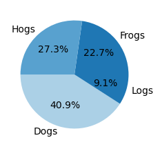
explode
Parfois, il est utile de faire ressortir une part du camembert ou, en termes plus scientifiques, de faire ressortir un élément.
explode. Celui-ci prend un tuple de la taille du nombre d’éléments dans le pie-chart.Voici un exemple :
[504]:
# Pie chart (chaque élément sera affiché dans le sens inverse des aiguilles d'une montre)
labels = 'Frogs', 'Hogs', 'Dogs', 'Logs'
sizes = [15, 30, 45, 10]
# Ici, on souhaite mettre la catégorie "Hogs" en avant. On met alors un écartement de 10% = 0.1.
explode = (0, 0.1, 0, 0)
plt.pie(sizes, explode=explode,labels=labels, autopct='%1.1f%%', shadow=True, startangle=90)
plt.show()
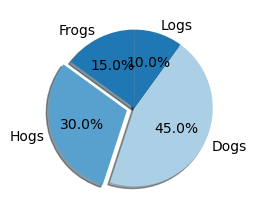
Les box plots
Quelle utilisation ?
Le code
plt.boxplot(array)
Pour afficher le graphique on utilise :
plt.show()
[505]:
# Création de données aléatoires (en l'occurence des notes à un test de maths)
# Tirage aléatoire de 30 entiers compris entre 0 et 20 inclus.
math_test = np.random.randint(1, 20 + 1, 30)
# Création du boxplot
plt.boxplot(math_test)
plt.show()
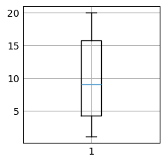
NB : Si vous lancez le code, vous n’aurez peut-être pas le même boxplot, ceci est normal puisque les données sont générées aléatoirement via np.random.randint()
Comment interpréter un boxplot
Un boxplot est utile pour voir où se trouve la majorité de vos données. Par exemple, dans le graphique du dessus, on sait que la majorité des élèves ont eu entre 10 et 17.5.
La grosse boite représente en fait l’écart interquartile c’est à dire 50% du dataset se trouve dans cette boite.
La ligne orange représente la médiane. Autrement dit, la moitié du dataset a eu une note inférieure à 12 et l’autre moitié a eu une note supérieure à 12.
Le reste du boxplot représente des valeurs minimum et maximum.
Il est aussi possible que les graphiques vous donne des points en dehors du boxplot qui sont cette fois des outliers
[506]:
plt.boxplot?
Signature:
plt.boxplot(
x: 'ArrayLike | Sequence[ArrayLike]',
notch: 'bool | None' = None,
sym: 'str | None' = None,
vert: 'bool | None' = None,
whis: 'float | tuple[float, float] | None' = None,
positions: 'ArrayLike | None' = None,
widths: 'float | ArrayLike | None' = None,
patch_artist: 'bool | None' = None,
bootstrap: 'int | None' = None,
usermedians: 'ArrayLike | None' = None,
conf_intervals: 'ArrayLike | None' = None,
meanline: 'bool | None' = None,
showmeans: 'bool | None' = None,
showcaps: 'bool | None' = None,
showbox: 'bool | None' = None,
showfliers: 'bool | None' = None,
boxprops: 'dict[str, Any] | None' = None,
labels: 'Sequence[str] | None' = None,
flierprops: 'dict[str, Any] | None' = None,
medianprops: 'dict[str, Any] | None' = None,
meanprops: 'dict[str, Any] | None' = None,
capprops: 'dict[str, Any] | None' = None,
whiskerprops: 'dict[str, Any] | None' = None,
manage_ticks: 'bool' = True,
autorange: 'bool' = False,
zorder: 'float | None' = None,
capwidths: 'float | ArrayLike | None' = None,
*,
data=None,
) -> 'dict[str, Any]'
Docstring:
Draw a box and whisker plot.
The box extends from the first quartile (Q1) to the third
quartile (Q3) of the data, with a line at the median.
The whiskers extend from the box to the farthest data point
lying within 1.5x the inter-quartile range (IQR) from the box.
Flier points are those past the end of the whiskers.
See https://en.wikipedia.org/wiki/Box_plot for reference.
.. code-block:: none
Q1-1.5IQR Q1 median Q3 Q3+1.5IQR
|-----:-----|
o |--------| : |--------| o o
|-----:-----|
flier <-----------> fliers
IQR
Parameters
----------
x : Array or a sequence of vectors.
The input data. If a 2D array, a boxplot is drawn for each column
in *x*. If a sequence of 1D arrays, a boxplot is drawn for each
array in *x*.
notch : bool, default: False
Whether to draw a notched boxplot (`True`), or a rectangular
boxplot (`False`). The notches represent the confidence interval
(CI) around the median. The documentation for *bootstrap*
describes how the locations of the notches are computed by
default, but their locations may also be overridden by setting the
*conf_intervals* parameter.
.. note::
In cases where the values of the CI are less than the
lower quartile or greater than the upper quartile, the
notches will extend beyond the box, giving it a
distinctive "flipped" appearance. This is expected
behavior and consistent with other statistical
visualization packages.
sym : str, optional
The default symbol for flier points. An empty string ('') hides
the fliers. If `None`, then the fliers default to 'b+'. More
control is provided by the *flierprops* parameter.
vert : bool, default: True
If `True`, draws vertical boxes.
If `False`, draw horizontal boxes.
whis : float or (float, float), default: 1.5
The position of the whiskers.
If a float, the lower whisker is at the lowest datum above
``Q1 - whis*(Q3-Q1)``, and the upper whisker at the highest datum
below ``Q3 + whis*(Q3-Q1)``, where Q1 and Q3 are the first and
third quartiles. The default value of ``whis = 1.5`` corresponds
to Tukey's original definition of boxplots.
If a pair of floats, they indicate the percentiles at which to
draw the whiskers (e.g., (5, 95)). In particular, setting this to
(0, 100) results in whiskers covering the whole range of the data.
In the edge case where ``Q1 == Q3``, *whis* is automatically set
to (0, 100) (cover the whole range of the data) if *autorange* is
True.
Beyond the whiskers, data are considered outliers and are plotted
as individual points.
bootstrap : int, optional
Specifies whether to bootstrap the confidence intervals
around the median for notched boxplots. If *bootstrap* is
None, no bootstrapping is performed, and notches are
calculated using a Gaussian-based asymptotic approximation
(see McGill, R., Tukey, J.W., and Larsen, W.A., 1978, and
Kendall and Stuart, 1967). Otherwise, bootstrap specifies
the number of times to bootstrap the median to determine its
95% confidence intervals. Values between 1000 and 10000 are
recommended.
usermedians : 1D array-like, optional
A 1D array-like of length ``len(x)``. Each entry that is not
`None` forces the value of the median for the corresponding
dataset. For entries that are `None`, the medians are computed
by Matplotlib as normal.
conf_intervals : array-like, optional
A 2D array-like of shape ``(len(x), 2)``. Each entry that is not
None forces the location of the corresponding notch (which is
only drawn if *notch* is `True`). For entries that are `None`,
the notches are computed by the method specified by the other
parameters (e.g., *bootstrap*).
positions : array-like, optional
The positions of the boxes. The ticks and limits are
automatically set to match the positions. Defaults to
``range(1, N+1)`` where N is the number of boxes to be drawn.
widths : float or array-like
The widths of the boxes. The default is 0.5, or ``0.15*(distance
between extreme positions)``, if that is smaller.
patch_artist : bool, default: False
If `False` produces boxes with the Line2D artist. Otherwise,
boxes are drawn with Patch artists.
labels : sequence, optional
Labels for each dataset (one per dataset).
manage_ticks : bool, default: True
If True, the tick locations and labels will be adjusted to match
the boxplot positions.
autorange : bool, default: False
When `True` and the data are distributed such that the 25th and
75th percentiles are equal, *whis* is set to (0, 100) such
that the whisker ends are at the minimum and maximum of the data.
meanline : bool, default: False
If `True` (and *showmeans* is `True`), will try to render the
mean as a line spanning the full width of the box according to
*meanprops* (see below). Not recommended if *shownotches* is also
True. Otherwise, means will be shown as points.
zorder : float, default: ``Line2D.zorder = 2``
The zorder of the boxplot.
Returns
-------
dict
A dictionary mapping each component of the boxplot to a list
of the `.Line2D` instances created. That dictionary has the
following keys (assuming vertical boxplots):
- ``boxes``: the main body of the boxplot showing the
quartiles and the median's confidence intervals if
enabled.
- ``medians``: horizontal lines at the median of each box.
- ``whiskers``: the vertical lines extending to the most
extreme, non-outlier data points.
- ``caps``: the horizontal lines at the ends of the
whiskers.
- ``fliers``: points representing data that extend beyond
the whiskers (fliers).
- ``means``: points or lines representing the means.
Other Parameters
----------------
showcaps : bool, default: True
Show the caps on the ends of whiskers.
showbox : bool, default: True
Show the central box.
showfliers : bool, default: True
Show the outliers beyond the caps.
showmeans : bool, default: False
Show the arithmetic means.
capprops : dict, default: None
The style of the caps.
capwidths : float or array, default: None
The widths of the caps.
boxprops : dict, default: None
The style of the box.
whiskerprops : dict, default: None
The style of the whiskers.
flierprops : dict, default: None
The style of the fliers.
medianprops : dict, default: None
The style of the median.
meanprops : dict, default: None
The style of the mean.
data : indexable object, optional
If given, all parameters also accept a string ``s``, which is
interpreted as ``data[s]`` (unless this raises an exception).
See Also
--------
violinplot : Draw an estimate of the probability density function.
File: /opt/anaconda3/lib/python3.11/site-packages/matplotlib/pyplot.py
Type: function
Boxplot détaillé

Paramètres utiles
whis : définir une limite d’outliers
Si vous le souhaitez, vous pouvez utiliser l’argument whis dont la valeur que vous allez insérer va déterminer les valeurs au delà desquelles, les éléments de votre échantillons seront considérés comme des outliers.
Le calcul se fait de la manière suivante :
Upper_bound = Q3 + whis*IQR
Lower_bound = Q1 - whis*IQR
Où IQR est l’écart interquartile (Q3-Q1)
[507]:
# Changer le seuil pour les outliers
# Création de données aléatoires (en l'occurence des notes à un test de maths)
math_test = np.random.randint(1, 20 + 1, 30)
# Ajout de valeurs aberrantes
math_test = np.append(math_test, np.array([22, 23, 24]))
# Creation du boxplot
plt.boxplot(math_test,
whis=.6)
plt.show()
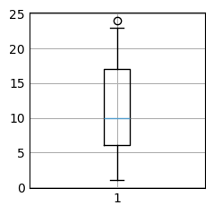
Ajouter la moyenne dans votre box plot
Visualiser la moyenne sur votre graphique est plutôt utile lorsque vous souhaitez la comparer à la médiane et en voir l’écart. Il vous suffira d’ajouter les arguments :
showmeans=Truemeanline=True
[508]:
# Ajouter la moyenne
# Création de données aléatoires (en l'occurence des notes à un test de maths)
math_test = np.random.randint(1, 20 + 1, 30)
# Ajout de valeurs aberrantes
math_test = np.append(math_test, np.array([22, 23, 24]))
# Creation du boxplot
plt.boxplot(math_test,
whis=0.6, # définit la plage de valeurs considérées comme "normales".
showmeans=True, # affiche la moyenne de l'ensemble de données à l'aide d'une ligne horizontale.
meanline=True, # affiche la ligne correspondante à la moyenne.
labels=['Math Test']) # ajoute un titre au boxplot.
plt.show()
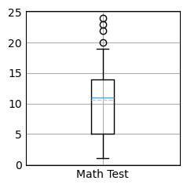
Les scatter plots
Quelle utilisation ?
Les scatter plots sont utilisés pour voir la relation entre deux variables.
Vous allez donc souvent les employer en Machine Learning.
Le code
plt.scatter(x, y)
Pour afficher le graphique on utilise :
plt.show()
[509]:
# Création de données aléatoires
x = np.arange(0.0, 100.0, 2.0)
y = x + np.random.rand(*x.shape) * 10.0 # Ici, on crée un relation approximativement linéaire entre x et y
# Création du scatter plot
plt.scatter(x, y)
plt.show()
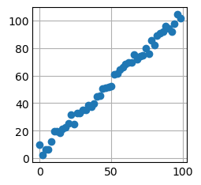
Paramètres utiles
Changer la taille de vos points
Parfois, vous voudrez peut être avoir des points plus gros en fonction de certaines conditions. Vous pouvez le faire grâce à l’argument s
[510]:
# Changer la taille des points
# Création de données aléatoires
# np.arange permet de créer des suites de nombre régulièrement espacés (ici : entre 0 et 100 par pas de 2)
x = np.arange(0.0, 100.0, 2.0)
# Ici, on crée un relation approximativement linéaire entre x et y
y = x + np.random.rand(*x.shape) * 10.0
# Ajout de différentes tailles pour chacun des points
area = (15 * np.random.rand(50)) ** 2
# Création du scatter plot
plt.scatter(x, y, s=area)
plt.show()
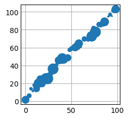
Changer la couleur de vos points
Vous pouvez aussi changer la couleur de vos points en fonction de certaines conditions via l’argument c
[511]:
# Change the color of the markers
# Création de données aléatoires
# np.arange permet de créer des suites de nombre régulièrement espacés (ici : entre 0 et 100 par pas de 2)
x = np.arange(0.0, 100.0, 2.0)
# Ici, on crée un relation approximativement linéaire entre x et y
y = x + np.random.rand(*x.shape) * 10.0
# Ajout de différentes tailles pour chacun des points
area = (15 * np.random.rand(50)) ** 2
# Ajout d'une séquence de couleurs
c = ["b", "r"] * 25
# Creation of the scatter plot
plt.scatter(x, y, s=area, c=c)
plt.show()
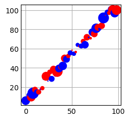
Personnaliser les graphiques
Il y a plusieurs éléments à prendre en considération lorsqu’on construit un graphique sur Matplotlib. Le schéma ci-dessous devrait pouvoir vous aider à y voir plus clair.

plt.figure(): initialisation de la figure. Pour définir la taille de la figure plt.figure(figsize=(12,8)) en inchesplt.plot(x,y): idiome graphique, ici une courbeplt.title('title'): titre du grapheplt.text('texte'): ajouter du texteplt.xlabel('name'): nom de l axe des abscissesplt.ylabel('name'): nom de l axe des ordonnéesplt.legend(): les légendes sont à mettre dans plt.plot(x,y,label=”quadratique”) grâce à label. Leur positionnement: plt.legend(loc=’lower right’)plt.show(): afficher le graphiqueplt.savefig('fig.png'): pour sauver notre figure sous le nom fig.png dans notre répertoire de travail.
Pour ajouter un titre, il vous suffit de mettre plt.title()
[512]:
# Création de données aléatoires
names = ['group_a', 'group_b', 'group_c']
values = [1, 10, 100]
# Création du Barplot
plt.bar(names, values)
plt.title("Voici un titre") # L'ajout du titre se fait ici
# Affichage du graphique
plt.show()
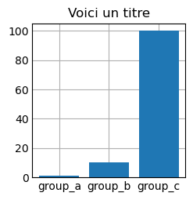
Vous pouvez ajouter des légendes via plt.legend().
Laisser en exercice.
[513]:
# Création des données
names = ['group_a', 'group_b', 'group_c']
values = [1, 10, 100]
values_2 = [7, 3, 10]
# Création des barplots
plt.bar(names, values_1)
plt.bar(names, values_2, bottom=values_1)
plt.legend(["values 1", "values 2"], loc = 'upper left') # Ajout de la légende
# Affichage du graphique
plt.show()
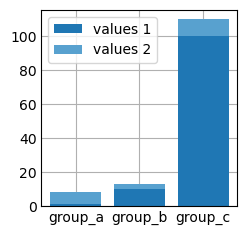
On peut bien sûr donner des noms aux axes du graphique via plt.xlabel ou plt.ylabel
[514]:
# Création des données
names = ['group_a', 'group_b', 'group_c']
values = [1, 10, 100]
# Création des barplots
plt.bar(names, values)
plt.xlabel("Abscissa axis") # Label pour l'abscisse
plt.ylabel("Ordinate axis") # Label pour l'ordonnée
# Affichage du graphique
plt.show()
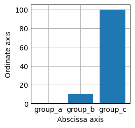
Parfois, il faut ajouter du texte à l’intérieur de vos graphiques pour pouvoir donner plus de visibilité au lecteur sur les valeurs exactes. Pour cela, on peut utiliser plt.text
Cette méthode fonctionne de la façon suivante :
Vous spécifiez les coordonnées du texte sur les axes des abscisses puis des ordonnées
Vous spécifiez le texte que vous souhaitez mettre
[515]:
plt.text?
Signature:
plt.text(
x: 'float',
y: 'float',
s: 'str',
fontdict: 'dict[str, Any] | None' = None,
**kwargs,
) -> 'Text'
Docstring:
Add text to the Axes.
Add the text *s* to the Axes at location *x*, *y* in data coordinates.
Parameters
----------
x, y : float
The position to place the text. By default, this is in data
coordinates. The coordinate system can be changed using the
*transform* parameter.
s : str
The text.
fontdict : dict, default: None
.. admonition:: Discouraged
The use of *fontdict* is discouraged. Parameters should be passed as
individual keyword arguments or using dictionary-unpacking
``text(..., **fontdict)``.
A dictionary to override the default text properties. If fontdict
is None, the defaults are determined by `.rcParams`.
Returns
-------
`.Text`
The created `.Text` instance.
Other Parameters
----------------
**kwargs : `~matplotlib.text.Text` properties.
Other miscellaneous text parameters.
Properties:
agg_filter: a filter function, which takes a (m, n, 3) float array and a dpi value, and returns a (m, n, 3) array and two offsets from the bottom left corner of the image
alpha: scalar or None
animated: bool
antialiased: bool
backgroundcolor: color
bbox: dict with properties for `.patches.FancyBboxPatch`
clip_box: unknown
clip_on: unknown
clip_path: unknown
color or c: color
figure: `~matplotlib.figure.Figure`
fontfamily or family or fontname: {FONTNAME, 'serif', 'sans-serif', 'cursive', 'fantasy', 'monospace'}
fontproperties or font or font_properties: `.font_manager.FontProperties` or `str` or `pathlib.Path`
fontsize or size: float or {'xx-small', 'x-small', 'small', 'medium', 'large', 'x-large', 'xx-large'}
fontstretch or stretch: {a numeric value in range 0-1000, 'ultra-condensed', 'extra-condensed', 'condensed', 'semi-condensed', 'normal', 'semi-expanded', 'expanded', 'extra-expanded', 'ultra-expanded'}
fontstyle or style: {'normal', 'italic', 'oblique'}
fontvariant or variant: {'normal', 'small-caps'}
fontweight or weight: {a numeric value in range 0-1000, 'ultralight', 'light', 'normal', 'regular', 'book', 'medium', 'roman', 'semibold', 'demibold', 'demi', 'bold', 'heavy', 'extra bold', 'black'}
gid: str
horizontalalignment or ha: {'left', 'center', 'right'}
in_layout: bool
label: object
linespacing: float (multiple of font size)
math_fontfamily: str
mouseover: bool
multialignment or ma: {'left', 'right', 'center'}
parse_math: bool
path_effects: list of `.AbstractPathEffect`
picker: None or bool or float or callable
position: (float, float)
rasterized: bool
rotation: float or {'vertical', 'horizontal'}
rotation_mode: {None, 'default', 'anchor'}
sketch_params: (scale: float, length: float, randomness: float)
snap: bool or None
text: object
transform: `~matplotlib.transforms.Transform`
transform_rotates_text: bool
url: str
usetex: bool or None
verticalalignment or va: {'bottom', 'baseline', 'center', 'center_baseline', 'top'}
visible: bool
wrap: bool
x: float
y: float
zorder: float
Examples
--------
Individual keyword arguments can be used to override any given
parameter::
>>> text(x, y, s, fontsize=12)
The default transform specifies that text is in data coords,
alternatively, you can specify text in axis coords ((0, 0) is
lower-left and (1, 1) is upper-right). The example below places
text in the center of the Axes::
>>> text(0.5, 0.5, 'matplotlib', horizontalalignment='center',
... verticalalignment='center', transform=ax.transAxes)
You can put a rectangular box around the text instance (e.g., to
set a background color) by using the keyword *bbox*. *bbox* is
a dictionary of `~matplotlib.patches.Rectangle`
properties. For example::
>>> text(x, y, s, bbox=dict(facecolor='red', alpha=0.5))
File: /opt/anaconda3/lib/python3.11/site-packages/matplotlib/pyplot.py
Type: function
[516]:
# Création des données
names = ['group_a', 'group_b', 'group_c']
values_1 = [1, 10, 100]
values_2 = [7, 3, 10]
# Création des barplots
plt.bar(names, values_1)
plt.bar(names, values_2, bottom=values_1)
# Ajout de texte au-dessus des barres
# Définir la police du texte:
polis = {'family': 'Arial', 'size': 16, 'style': 'italic', 'color': 'red'}
plt.text(names[0], values_1[0] + values_2[0], names[0], horizontalalignment='center', fontdict=polis)
plt.text(names[1], values_1[1] + values_2[1], names[1], horizontalalignment='center')
plt.text(names[2], values_1[2] + values_2[2], names[2], horizontalalignment='center')
# Affichage du graphique
plt.show()
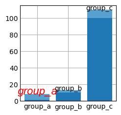
Souvent, vous aurez besoin d’agrandir la taille de votre graphique, vous pouvez le faire via plt.figure(figsize=(height, width)).
L’unité est le inch (1 inch = 2.54 cm).
[517]:
# Création des données
names = ['group_a', 'group_b', 'group_c']
values = [1, 10, 100]
# Création du Barplot
# Changement de la taille de la figure
plt.figure(figsize=(10, 10))
plt.bar(names, values)
# Affichage du graphique
plt.show()
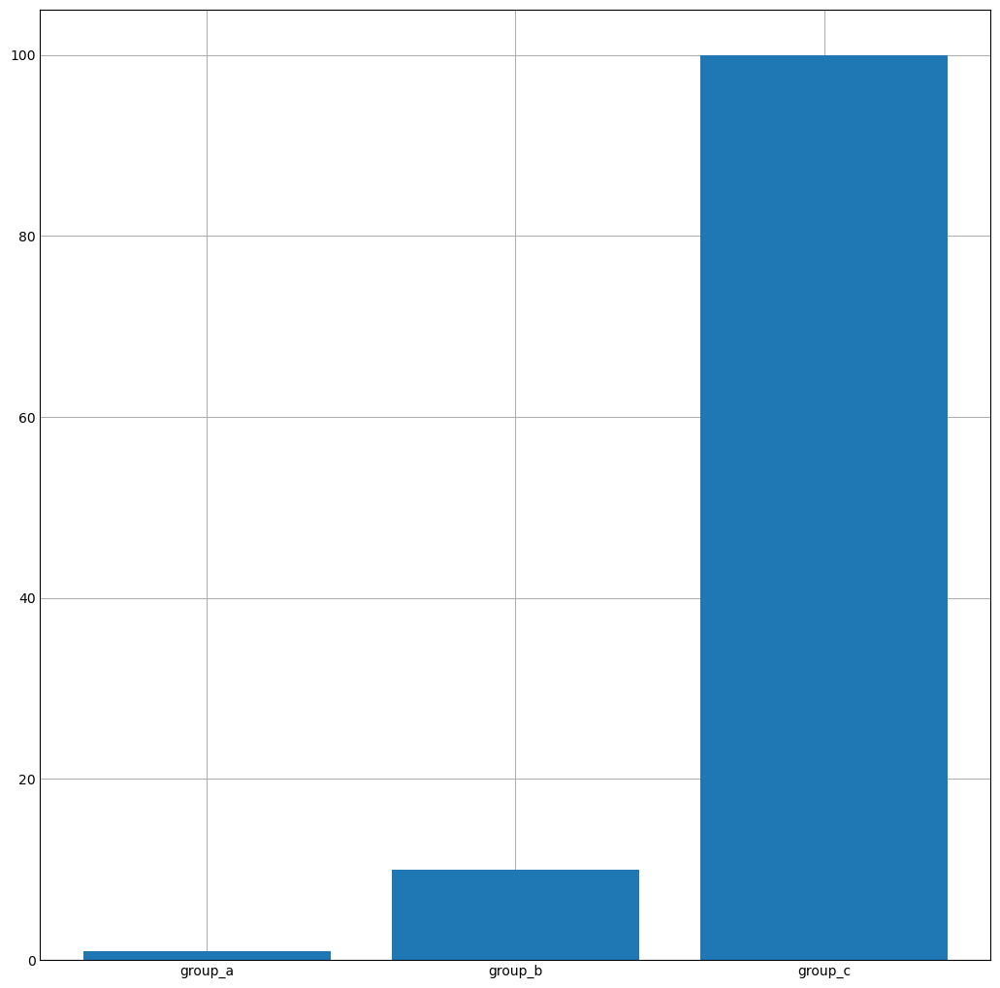
Ci-dessous un exemple avec les personnalisations vues précédemment et incluant la sauvegarde du graphe plt.savefig('nom_image.png'))
[518]:
v = np.array([1, 2, 3, 4])
x = np.array([0, 1, 2, 3])
# Crée une nouvelle figure
plt.figure()
# Dessine la courbe v en fonction de x
# 'rv--' <=> color='red', marker='v', linestyle='dashed',
# label -> utilisé pour la légende
plt.plot(x, v, color='red', marker='+', linestyle='dashed', label='v(x)')
plt.plot(v, x, color='blue', marker='o', linestyle='solid', label='x(v)')
# Rajoute une legende dans le coin en bas à droite
plt.legend(loc='upper left')
# Met une legende pour les axes
plt.xlabel('x')
plt.ylabel('v')
# Rajoute un titre
plt.title('Mon titre')
# Définie les limites des axes
plt.xlim([-1, 4])
plt.ylim([0, 5])
# Dans un script non-interactif, montre la figure et met en pause le script
plt.show()
# Sauve la figure sous la forme d'un `png`
plt.savefig('toto.png')
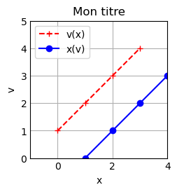
<Figure size 200x200 with 0 Axes>
Disposition des graphiques
Superposer plusieurs line plots dans la même figure
Pour superposer plusieurs line plots dans la même figure, il suffit d’appeler plusieurs fois la fonction plt.plot() avant de faire un uniqure plt.show() :
Il y a deux méthodes pour créer des graphiques pyplot (plt) et Orienté Objet Plot (OOP) Souvent les développeurs mélangent les deux ce qu’il ne faut pas faire
[519]:
# Création de données sinusoïdales
t = np.arange(0.0, 2.0, 0.01)
s1 = 1 + np.sin(2 * np.pi * t)
s2 = np.cos(2 * np.pi * t)
# Création de la figure
plt.plot(t, s1, color='red')
plt.plot(t, s2, color='green')
# Affichage du graphique
plt.show()
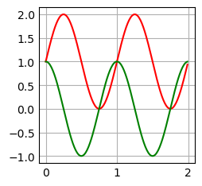
Exercice:
Superposer dans un même graphe les courbes \(sin(x)\) et \(cos(x)\) pour des valeurs de \(x\) allant de 0 à \(2\pi\)
SOLUTION:
On a rajouté le paramètre c = ‘color’
NB: la fonction plot() génère un graphique mais elle n’effectue pas de calculs.
[520]:
# Définir les valeurs de x
x = np.linspace(0, 2*np.pi, 100)
s = np.sin(x)
c = np.cos(x)
plt.plot(x, s, c='red')
plt.plot(x, c, c='blue')
# Affichage du graphique
plt.show()
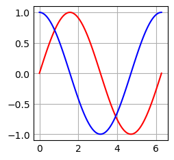
Combiner plusieurs sous-figures dans une même figure
Méthode plt.subplot()
plt.subplot(nb_rows, nb_columns, position_of_the_figure)
[521]:
x = np.linspace(-2, 2, 101)
plt.figure(figsize=(15, 8))
plt.subplot(2, 2, 1)
plt.plot(x, x + 2, 'g--', label='$y = x + 2$')
plt.legend(loc=0)
plt.subplot(2, 2, 2)
plt.plot(x, 2 * x, 'r*-', label='$y = 2x$', markevery=10)
plt.legend(loc=2)
plt.subplot(2, 2, 3)
plt.plot(x, x ** 2, 'bs-', label='$y = x^2$', markevery=10)
plt.legend(loc=2)
plt.subplot(2, 2, 4)
plt.plot(x, np.exp(x), 'ko-', label='$y = \sqrt{x}$', markevery=10)
plt.legend(loc=2)
# Afficher le graphique
plt.show()
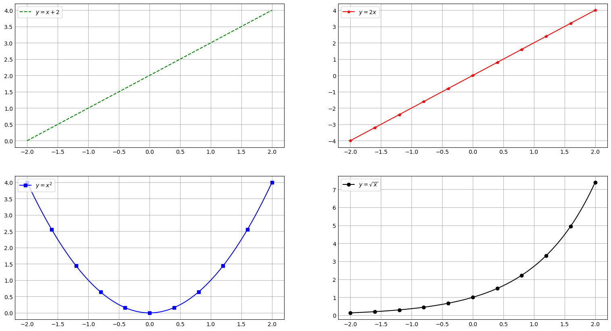
Exercice: combiner sur une même figure un pie chart, un graphique en barres et un scatter plot.
[522]:
# Création des données pour le Pie Chart
labels = 'Frogs', 'Hogs', 'Dogs', 'Logs'
sizes = [15, 30, 45, 10]
explode = (0, 0.1, 0, 0)
# Création des données pour le Bar Chart
names = ['group_a', 'group_b', 'group_c']
values_1 = [1, 10, 100]
values_2 = [7, 3, 10]
# Création des données pour le Scatter Plot
x = np.arange(0.0, 100.0, 2.0)
y = x + np.random.rand(*x.shape) * 10.0
# Création de la figure via plt.subplot()
plt.figure(figsize=(10, 10))
## Création du Pie Chart
plt.subplot(221) # on demande 2x2 sous-figures, le Pie Chart sera en position 1
plt.pie(sizes, explode=explode,labels=labels, autopct='%1.1f%%',shadow=True, startangle=90)
## Création du Bar Chart
plt.subplot(222) # on demande 2x2 sous-figures, le Bar Chart sera en position 2
plt.bar(names, values_1)
plt.bar(names, values_2, bottom=values_1)
plt.legend(["values_1", "values_2"]) # Create legends
# Création du Scatter Plot
plt.subplot(223) # on demande 2x2 sous-figures, le Scatter Plot sera en position 3
plt.scatter(x, y)
plt.xlabel('Variable X')
plt.ylabel('Variable Y')
# Affichage du graphique
plt.show()
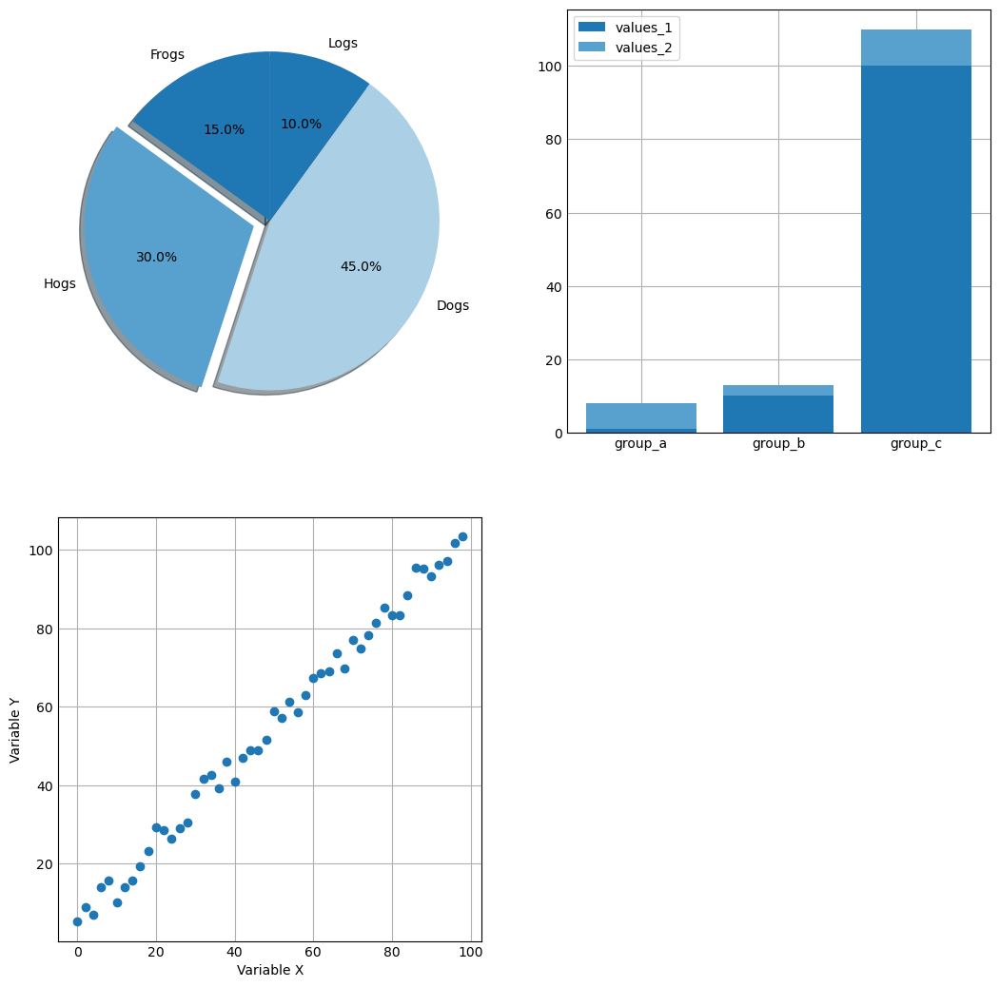
Méthode plt.subplots()
Les Axes permettent de créer des sous-figures (des sous-tracés).
A ne pas confondre avec les axes des abscisses et des ordonnées ce sont des graphiques à l’intérieur de votre figure

Les Axis : Les Axis correspondent à l’abscisse et l’ordonnée de chacun des graphiques (ou Axes).
Artist : Il est possible que vous voyez ce terme dans la documentation de Matplotlib. Cela désigne l’ensemble des éléments dans le graphique (incluant Figure, Axes, Axis)
En pratique:
La fonction plt.subplots() est utilisée pour créer une figure et un objet de sous-tracé (axes).
En utilisant plt.subplots(), vous pouvez créer une figure et un ou plusieurs sous-tracés, ce qui vous permet de personnaliser l’affichage de chaque sous-tracé individuellement.
Vous pouvez également ajouter des titres, des étiquettes d’axes, des légendes, des grilles, etc. à chaque sous-tracé.
Ensuite, la méthode plot() est appelée sur l’objet de sous-tracé (axes) pour tracer la courbe. Enfin, la fonction plt.show() est utilisée pour afficher le graphique.
Notez la présence du s à la fin de subplots() contrairement à la méthode subplot() précédente.
Commençons par créer un graphique unique à l’aide des axes.
[523]:
# Création de données sinusoïdales
x = np.linspace(0, 10, 100)
y = 4 + 2 * np.sin(2 * x)
# Créer une figure (fig) et un ensemble d'axes (ici un seul: ax)
fig, ax = plt.subplots()
# Création du LinePlot
ax.plot(x, y)
plt.show()
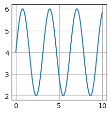
[524]:
# Générer des données pour les deux graphes
x1 = np.linspace(0, 10, 100)
x2 = np.linspace(0, 5, 50)
y1 = np.sin(x1)
y2 = np.cos(x2)
# Créer une figure et deux objets axes pour les deux graphes
fig, (ax1, ax2) = plt.subplots(nrows=1, ncols=2) # 1 ligne, 2 colonnes
# Tracer le premier graphe sur le premier objet axes
ax1.plot(x1, y1)
ax1.set_title('Graphe 1')
ax1.set_xlabel('x')
ax1.set_ylabel('sin(x)')
# Tracer le deuxième graphe sur le deuxième objet axes
ax2.plot(x2, y2, c='g')
ax2.set_title('Graphe 2')
ax2.set_xlabel('x')
ax2.set_ylabel('cos(x)')
# Afficher la figure avec les deux graphes
plt.show()
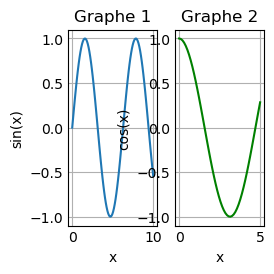
Les Axes permettent aussi la superposition des plots
[525]:
x = np.linspace(0, 2*np.pi, 100)
s = np.sin(x)
c = np.cos(x)
fig, ax = plt.subplots()
ax.plot(x,s,c='red')
ax.plot(x,c, c='blue')
plt.show()

Personnalisation du graphique:
.set(xlim=, ylim=, xticks=, yticks=)
[526]:
plt.style.use('_mpl-gallery')
# make data
x = np.linspace(0, 10, 100)
y = 4 + 2 * np.sin(2 * x)
# initialisation de la figure et des axes (ici un seul)
fig, ax = plt.subplots()
# définition du graphique
ax.plot(x, y, linewidth=2.0)
# dimensionnement (xlim / ylim) et valeurs (xticks / yticks) des abscisses et des ordonnées
ax.set(xlim=(0, 8), xticks=np.arange(1, 8),
ylim=(0, 8), yticks=np.arange(1, 8))
plt.show()
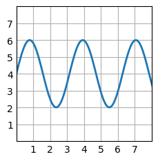
[527]:
# Graphes avec la méthode Orientée Objet (O.O.P)
plt.figure()
fig, ax = plt.subplots(2, 1, sharex=True) # On prépare un cadre (2,1) et on partage les mêmes abscisses
ax[0].plot(x,x**2)
ax[1].plot(x,x**3)
plt.show()
<Figure size 200x200 with 0 Axes>
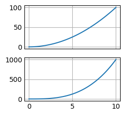
Les inputs d’un graphique sur Matplotlib
Pour le moment, Matplotlib préfère recevoir des objets numpy en tant qu’input de graphique.
Notamment, les objets Pandas peuvent entrainer des comportements inattendus. Nous vous conseillons donc de les transformer via :
X = dataset.values
Pour la suite nous aurons donc besoin des librairies numpy et matplotlib (plus précisément, le module pyplot de matplotlib). Nous allons donc les importer :
Nous avons vu les principaux types de graphiques que vous pouviez faire avec Matplotlib mais nous n’avons pas vu comment les personnaliser.
Il est important en effet de pouvoir ajouter des titres, du texte et autres éléments de ce genre à l’intérieur de vos graphiques. C’est donc le thème de cette partie.
[528]:
# Les packages
import numpy as np
import matplotlib.pyplot as plt
from sklearn.datasets import load_iris # on va importer le dataset iris
iris = load_iris()
x = iris.data
x_names = list(iris.feature_names)
y = iris.target
y_names = list(iris.target_names)
[529]:
load_iris?
Signature: load_iris(*, return_X_y=False, as_frame=False)
Docstring:
Load and return the iris dataset (classification).
The iris dataset is a classic and very easy multi-class classification
dataset.
================= ==============
Classes 3
Samples per class 50
Samples total 150
Dimensionality 4
Features real, positive
================= ==============
Read more in the :ref:`User Guide <iris_dataset>`.
Parameters
----------
return_X_y : bool, default=False
If True, returns ``(data, target)`` instead of a Bunch object. See
below for more information about the `data` and `target` object.
.. versionadded:: 0.18
as_frame : bool, default=False
If True, the data is a pandas DataFrame including columns with
appropriate dtypes (numeric). The target is
a pandas DataFrame or Series depending on the number of target columns.
If `return_X_y` is True, then (`data`, `target`) will be pandas
DataFrames or Series as described below.
.. versionadded:: 0.23
Returns
-------
data : :class:`~sklearn.utils.Bunch`
Dictionary-like object, with the following attributes.
data : {ndarray, dataframe} of shape (150, 4)
The data matrix. If `as_frame=True`, `data` will be a pandas
DataFrame.
target: {ndarray, Series} of shape (150,)
The classification target. If `as_frame=True`, `target` will be
a pandas Series.
feature_names: list
The names of the dataset columns.
target_names: list
The names of target classes.
frame: DataFrame of shape (150, 5)
Only present when `as_frame=True`. DataFrame with `data` and
`target`.
.. versionadded:: 0.23
DESCR: str
The full description of the dataset.
filename: str
The path to the location of the data.
.. versionadded:: 0.20
(data, target) : tuple if ``return_X_y`` is True
A tuple of two ndarray. The first containing a 2D array of shape
(n_samples, n_features) with each row representing one sample and
each column representing the features. The second ndarray of shape
(n_samples,) containing the target samples.
.. versionadded:: 0.18
Notes
-----
.. versionchanged:: 0.20
Fixed two wrong data points according to Fisher's paper.
The new version is the same as in R, but not as in the UCI
Machine Learning Repository.
Examples
--------
Let's say you are interested in the samples 10, 25, and 50, and want to
know their class name.
>>> from sklearn.datasets import load_iris
>>> data = load_iris()
>>> data.target[[10, 25, 50]]
array([0, 0, 1])
>>> list(data.target_names)
['setosa', 'versicolor', 'virginica']
File: /opt/anaconda3/lib/python3.11/site-packages/sklearn/datasets/_base.py
Type: function
[530]:
type(x)
[530]:
numpy.ndarray
[531]:
x.shape
[531]:
(150, 4)
[532]:
print("x contient {} exemples et {} variables".format(x.shape[0], x.shape[1]))
x contient 150 exemples et 4 variables
[533]:
x_names
[533]:
['sepal length (cm)',
'sepal width (cm)',
'petal length (cm)',
'petal width (cm)']
[534]:
x[:10,:4]
[534]:
array([[5.1, 3.5, 1.4, 0.2],
[4.9, 3. , 1.4, 0.2],
[4.7, 3.2, 1.3, 0.2],
[4.6, 3.1, 1.5, 0.2],
[5. , 3.6, 1.4, 0.2],
[5.4, 3.9, 1.7, 0.4],
[4.6, 3.4, 1.4, 0.3],
[5. , 3.4, 1.5, 0.2],
[4.4, 2.9, 1.4, 0.2],
[4.9, 3.1, 1.5, 0.1]])
[535]:
y.shape
[535]:
(150,)
[536]:
print("Il y a {} classes".format(np.unique(y).size))
Il y a 3 classes
[537]:
y_names
[537]:
['setosa', 'versicolor', 'virginica']
[538]:
# graphique de classification. On prend 2 de nos variables x p.ex. x[:,0] et x[:,1] et on va colorier les points selons y
# alpha = transparence, s = 100 (size)
plt.figure(figsize=(10,10))
plt.scatter(x[:,0], x[:,1], c = y, alpha = 0.5, s = 100)
plt.xlabel('x[:,0]')
plt.ylabel('x[:,1]')
plt.show()
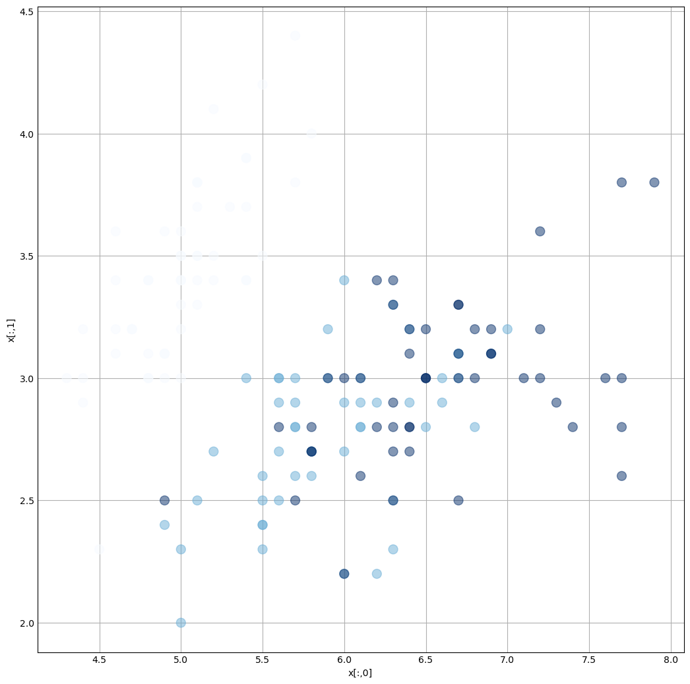
[539]:
# 3. L'histogramme
# 3.1. Pour voir la distribution des données
plt.hist(x[:,0])
[539]:
(array([ 9., 23., 14., 27., 16., 26., 18., 6., 5., 6.]),
array([4.3 , 4.66, 5.02, 5.38, 5.74, 6.1 , 6.46, 6.82, 7.18, 7.54, 7.9 ]),
<BarContainer object of 10 artists>)
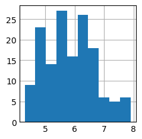
[540]:
plt.hist(x[:,0], bins = 30) # bins pour modifier les intervalles des abscisses
[540]:
(array([ 4., 1., 4., 2., 5., 16., 9., 4., 1., 6., 13., 8., 7.,
3., 6., 10., 9., 7., 5., 2., 11., 4., 1., 1., 4., 1.,
0., 1., 4., 1.]),
array([4.3 , 4.42, 4.54, 4.66, 4.78, 4.9 , 5.02, 5.14, 5.26, 5.38, 5.5 ,
5.62, 5.74, 5.86, 5.98, 6.1 , 6.22, 6.34, 6.46, 6.58, 6.7 , 6.82,
6.94, 7.06, 7.18, 7.3 , 7.42, 7.54, 7.66, 7.78, 7.9 ]),
<BarContainer object of 30 artists>)

[541]:
plt.hist(x[:,0], bins = 20) # lancer avec la ligne suivante pour superposer
plt.hist(x[:,1], bins = 20)
[541]:
(array([ 1., 3., 4., 3., 8., 14., 14., 10., 26., 11., 19., 12., 6.,
4., 9., 2., 1., 1., 1., 1.]),
array([2. , 2.12, 2.24, 2.36, 2.48, 2.6 , 2.72, 2.84, 2.96, 3.08, 3.2 ,
3.32, 3.44, 3.56, 3.68, 3.8 , 3.92, 4.04, 4.16, 4.28, 4.4 ]),
<BarContainer object of 20 artists>)
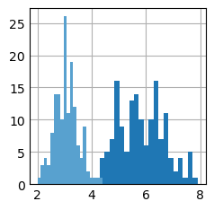
[542]:
# 3.2. histogrammes en 2D
plt.hist2d(x[:,0],x[:,1])
plt.xlabel('longueur Sépal')
plt.ylabel('largeur Sépal')
plt.colorbar() # pour afficher la légende des coleurs
# Permet de voir qu'il y a environ 10 iris qui ont une longueur de 6.3 et une largeur de 2.8 inches.
[542]:
<matplotlib.colorbar.Colorbar at 0x1496bd450>

[543]:
# 3. L'histogramme
# 3.1. Pour voir la distribution des données
plt.hist(x[:,0])
[543]:
(array([ 9., 23., 14., 27., 16., 26., 18., 6., 5., 6.]),
array([4.3 , 4.66, 5.02, 5.38, 5.74, 6.1 , 6.46, 6.82, 7.18, 7.54, 7.9 ]),
<BarContainer object of 10 artists>)

[544]:
plt.hist(x[:,0], bins = 30) # bins pour modifier les intervalles des abscisses
[544]:
(array([ 4., 1., 4., 2., 5., 16., 9., 4., 1., 6., 13., 8., 7.,
3., 6., 10., 9., 7., 5., 2., 11., 4., 1., 1., 4., 1.,
0., 1., 4., 1.]),
array([4.3 , 4.42, 4.54, 4.66, 4.78, 4.9 , 5.02, 5.14, 5.26, 5.38, 5.5 ,
5.62, 5.74, 5.86, 5.98, 6.1 , 6.22, 6.34, 6.46, 6.58, 6.7 , 6.82,
6.94, 7.06, 7.18, 7.3 , 7.42, 7.54, 7.66, 7.78, 7.9 ]),
<BarContainer object of 30 artists>)
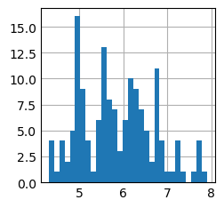
[545]:
plt.hist(x[:,0], bins = 20) # lancer avec la ligne suivante pour superposer
plt.hist(x[:,1], bins = 20)
[545]:
(array([ 1., 3., 4., 3., 8., 14., 14., 10., 26., 11., 19., 12., 6.,
4., 9., 2., 1., 1., 1., 1.]),
array([2. , 2.12, 2.24, 2.36, 2.48, 2.6 , 2.72, 2.84, 2.96, 3.08, 3.2 ,
3.32, 3.44, 3.56, 3.68, 3.8 , 3.92, 4.04, 4.16, 4.28, 4.4 ]),
<BarContainer object of 20 artists>)

[546]:
# 3.2. histogrammes en 2D
plt.hist2d(x[:,0],x[:,1])
plt.xlabel('longueur Sépal')
plt.ylabel('largeur Sépal')
plt.colorbar() # pour afficher la légende des coleurs
# Permet de voir qu'il y a environ 10 iris qui ont une longueur de 6.3 et une largeur de 2.8 inches.
[546]:
<matplotlib.colorbar.Colorbar at 0x1383dce90>
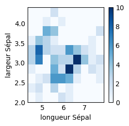
Visualisation des matrices
Les matrices peuvent être visualisées comme des images avec les fonctions matshow et imshow de matplotlib.
[547]:
M = np.array([[1, 0], [3, 2]])
print(M)
print(type(M))
[[1 0]
[3 2]]
<class 'numpy.ndarray'>
[548]:
plt.imshow(M)
[548]:
<matplotlib.image.AxesImage at 0x16c1d6b90>
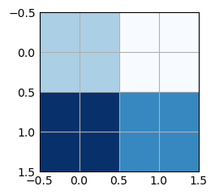
[549]:
# On enlève les axes de la figure avec `plt.axis('off')`
plt.imshow(M)
plt.axis('off')
[549]:
(-0.5, 1.5, 1.5, -0.5)
[550]:
# Les axes sont modifiés directement par `matshow`
plt.matshow(M)
[550]:
<matplotlib.image.AxesImage at 0x16c2706d0>
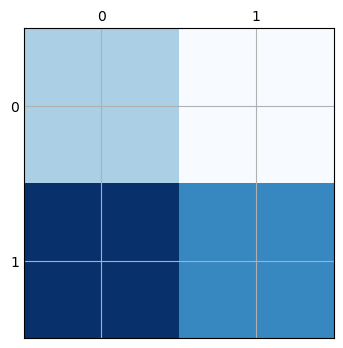
np.pi.[551]:
t = np.linspace(0, 2 * np.pi, 1000)
x = np.cos(t)
y = np.sin(t)
ax = plt.subplot(aspect='equal')
ax.plot(x, y)
ax.vlines(0, -1, 1)
ax.hlines(0, -1, 1)
[551]:
<matplotlib.collections.LineCollection at 0x16c2c4d10>
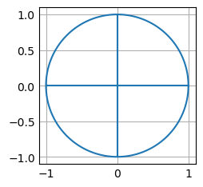
Exercice
Créer un dictionnaire avec 4 clés et à chaque clé est associé un vecteur de 100 tirages loi normale.
Créer une fonction graphique qui va imprimer dans une seule et même figure les 4 graphes
def graphique(dataset):
SOLUTION
[552]:
dataset = {f"reference{i}":np.random.randn(1,3) for i in range(4)}
[553]:
dataset
[553]:
{'reference0': array([[-1.17173494, 0.64971026, -0.91362275]]),
'reference1': array([[1.2042578 , 0.93636529, 0.75136239]]),
'reference2': array([[2.62133435, 1.4483669 , 0.27931085]]),
'reference3': array([[-1.05667017, -0.00175646, -0.78349172]])}
Visualisation des tenseurs
3D, 4D and plus
[554]:
import matplotlib.pyplot as plt
import numpy as np
# Générer des données aléatoires pour X, Y et Z
X = np.random.rand(50)
Y = np.random.rand(50)
Z = np.random.rand(50)
# Créer un graphique de dispersion avec colormapping
fig = plt.figure()
ax = fig.add_subplot(111, projection='3d')
ax.scatter(X, Y, Z, c=Z, cmap='plasma')
# Afficher le graphique
plt.show()
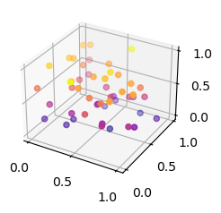
[555]:
# 2.2. Les surfaces en 3D
def f(x,y):
return np.sin(x) + np.cos(x+y)
# équivaut à
f = lambda x, y: np.sin(x) + np.cos(x+y) #lambda utilisable pour les fonctions "simples".
# Axes 3D
X = np.linspace(0,5,100)
Y = np.linspace(0,5,100)
X, Y = np.meshgrid(X, Y) # Axes 3D
Z = f(X,Y)
ax = plt.axes(projection='3d') # création de l'objet axe
ax.scatter(X,Y,Z, cmap = 'plasma')
/var/folders/tb/_m1wm0vd633_w2zg_9vw_19m0000gn/T/ipykernel_48056/1155468832.py:14: UserWarning: No data for colormapping provided via 'c'. Parameters 'cmap' will be ignored
ax.scatter(X,Y,Z, cmap = 'plasma')
[555]:
<mpl_toolkits.mplot3d.art3d.Path3DCollection at 0x16c2e8110>
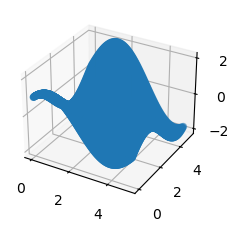
[556]:
# 2. Graphique 3D
# 2.1. Les échantillons en 3D
from mpl_toolkits.mplot3d import Axes3D
#%matplotlib # à mettre dans les jupyter notebook pour déplacer, zoomer dans les graphiques
Exercice 5 : (le plateau d’échec)
Créez un tableau de zéros et le remplir pour obtenir un motif de plateau d’échec de dimension 8x8.
|8e9c182b6493499fb3ef7c32be7b73c1|
[557]:
# %load solutions/exo05.py
# %%writefile solutions/exo05.py
E = np.zeros((8, 8))
E[0::2, 0::2] = 1
E[1::2, 1::2] = 1
plt.matshow(E, cmap='gray')
[557]:
<matplotlib.image.AxesImage at 0x16c3df3d0>
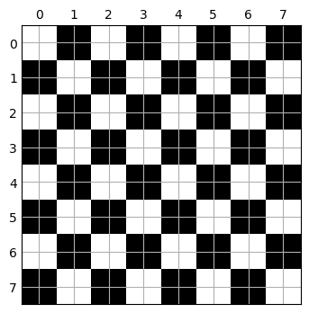
[558]:
E = np.tile([[1, 0], [0, 1]], (4, 4))
E
np.tile?
# %load solutions/exo05.py
Signature: np.tile(A, reps)
Call signature: np.tile(*args, **kwargs)
Type: _ArrayFunctionDispatcher
String form: <function tile at 0x10b446200>
File: /opt/anaconda3/lib/python3.11/site-packages/numpy/lib/shape_base.py
Docstring:
Construct an array by repeating A the number of times given by reps.
If `reps` has length ``d``, the result will have dimension of
``max(d, A.ndim)``.
If ``A.ndim < d``, `A` is promoted to be d-dimensional by prepending new
axes. So a shape (3,) array is promoted to (1, 3) for 2-D replication,
or shape (1, 1, 3) for 3-D replication. If this is not the desired
behavior, promote `A` to d-dimensions manually before calling this
function.
If ``A.ndim > d``, `reps` is promoted to `A`.ndim by pre-pending 1's to it.
Thus for an `A` of shape (2, 3, 4, 5), a `reps` of (2, 2) is treated as
(1, 1, 2, 2).
Note : Although tile may be used for broadcasting, it is strongly
recommended to use numpy's broadcasting operations and functions.
Parameters
----------
A : array_like
The input array.
reps : array_like
The number of repetitions of `A` along each axis.
Returns
-------
c : ndarray
The tiled output array.
See Also
--------
repeat : Repeat elements of an array.
broadcast_to : Broadcast an array to a new shape
Examples
--------
>>> a = np.array([0, 1, 2])
>>> np.tile(a, 2)
array([0, 1, 2, 0, 1, 2])
>>> np.tile(a, (2, 2))
array([[0, 1, 2, 0, 1, 2],
[0, 1, 2, 0, 1, 2]])
>>> np.tile(a, (2, 1, 2))
array([[[0, 1, 2, 0, 1, 2]],
[[0, 1, 2, 0, 1, 2]]])
>>> b = np.array([[1, 2], [3, 4]])
>>> np.tile(b, 2)
array([[1, 2, 1, 2],
[3, 4, 3, 4]])
>>> np.tile(b, (2, 1))
array([[1, 2],
[3, 4],
[1, 2],
[3, 4]])
>>> c = np.array([1,2,3,4])
>>> np.tile(c,(4,1))
array([[1, 2, 3, 4],
[1, 2, 3, 4],
[1, 2, 3, 4],
[1, 2, 3, 4]])
Class docstring:
Class to wrap functions with checks for __array_function__ overrides.
All arguments are required, and can only be passed by position.
Parameters
----------
dispatcher : function or None
The dispatcher function that returns a single sequence-like object
of all arguments relevant. It must have the same signature (except
the default values) as the actual implementation.
If ``None``, this is a ``like=`` dispatcher and the
``_ArrayFunctionDispatcher`` must be called with ``like`` as the
first (additional and positional) argument.
implementation : function
Function that implements the operation on NumPy arrays without
overrides. Arguments passed calling the ``_ArrayFunctionDispatcher``
will be forwarded to this (and the ``dispatcher``) as if using
``*args, **kwargs``.
Attributes
----------
_implementation : function
The original implementation passed in.
Computer vision
La vision par ordinateur (computer vision) est un domaine de l’informatique qui vise à créer des systèmes capables de comprendre et d’interpréter le contenu visuel d’une image ou d’une vidéo.
[559]:
# Chargement du package matplotlib pour afficher la photo
import matplotlib.pyplot as plt
[560]:
# Récupèrer la photo du raton laveur qui est présente dans le module misc:
from scipy import misc
# Pour charger la photo qui est un tableau numpy
face = misc.face()
plt.imshow(face)
plt.show
/var/folders/tb/_m1wm0vd633_w2zg_9vw_19m0000gn/T/ipykernel_48056/3726489003.py:7: DeprecationWarning: scipy.misc.face has been deprecated in SciPy v1.10.0; and will be completely removed in SciPy v1.12.0. Dataset methods have moved into the scipy.datasets module. Use scipy.datasets.face instead.
face = misc.face()
[560]:
<function matplotlib.pyplot.show(close=None, block=None)>
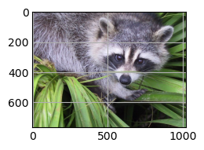
[561]:
type(face)
[561]:
numpy.ndarray
[562]:
# Nombre de dimensions:
face.ndim
[562]:
3
[563]:
# Forme de l'image
face.shape
[563]:
(768, 1024, 3)
3 pour 3 couleurs (R, G, B)
[564]:
# Pour charger la photo en gris qui est un tableau numpy
face = misc.face(gray=True)
plt.imshow(face, cmap = plt.cm.gray)
plt.show
/var/folders/tb/_m1wm0vd633_w2zg_9vw_19m0000gn/T/ipykernel_48056/1194247832.py:3: DeprecationWarning: scipy.misc.face has been deprecated in SciPy v1.10.0; and will be completely removed in SciPy v1.12.0. Dataset methods have moved into the scipy.datasets module. Use scipy.datasets.face instead.
face = misc.face(gray=True)
[564]:
<function matplotlib.pyplot.show(close=None, block=None)>
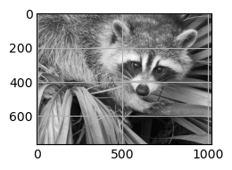
[565]:
# Type de face
type(face)
[565]:
numpy.ndarray
[566]:
# Forme de la photo:
face.shape
[566]:
(768, 1024)
[567]:
# exo: zoomer de 1/4 vers le milieu de la photo.
# Indice: utiliser le tuple shape pour récupérer les dimensions et les enregristrer dans des variables
# et utiliser ces variables dans les techniques de slicing
# en bonus: augmenter la luminiosité de pixles qui sont au-dessus d'une certaine luminosité
h = face.shape[0] # on récupére la hauteur du tableau (height). Axis = 0.
w = face.shape[1] # on récupère la largeur du tableau (width). Axis = 1.
zoom_face = face[h//4:-h//4,w//4:-w//4] # On zoome x2 sur l'image
plt.imshow(zoom_face, cmap = plt.cm.gray) # affichage du zoom
# on peut s'amuser à saturer les pixels blancs (forte valeur) > 200 en les pixélisant à 255.
zoom_face[zoom_face > 200] = 255
# on peut aussi diminuer la taille de l'image
face = face[::2,::2]
plt.imshow(zoom_face, cmap = plt.cm.gray) # affichage du zoom
# Pourquoi avoir écrit h//4:-h//4 pour zoomer x2? Car cela revient à sélectionner la moitié de l'image.
np.random.seed(0)
A = np.random.randint(0,10, [8,8])
A.shape
h = A.shape[0]
w = A.shape[1]
A[2:-2,] # avec cette écriture on enlève bien la moitié des lignes
B = A[int(h/4):-int(h/4),] # Ce qui revient à écrire cela (pour le slicing les indexes doivent être des entiers)
B = A[h//4:-h//4,w//4:-w//4] # autre écriture retournant le même résultat mais faisant intervenir la division entière //
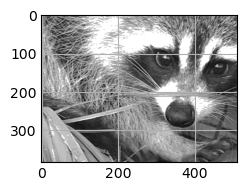
OpenCV est une bibliothèque open source de vision par ordinateur et d’apprentissage automatique.
Le package Python opencv-python est l’interface de cette bibliothèque. Il fournit des centaines de fonctions et d’algorithmes pour la manipulation d’images et de vidéos, la détection d’objets et de visages, le suivi de mouvement, la reconnaissance de formes, et bien plus encore.
[568]:
# Prérequis: installation du package
!pip install opencv-python
Requirement already satisfied: opencv-python in /opt/anaconda3/lib/python3.11/site-packages (4.9.0.80)
Requirement already satisfied: numpy>=1.21.2 in /opt/anaconda3/lib/python3.11/site-packages (from opencv-python) (1.26.4)
[569]:
#import cv2
# Lisez l'image
#image = cv2.imread('Google_colab.png')
# Convertissez l'image en niveaux de gris
#gray_image = cv2.cvtColor(image, cv2.COLOR_BGR2GRAY)
# # Affichez l'image en niveaux de gris
#cv2.imshow('Image en niveaux de gris', gray_image)
#cv2.waitKey(0)
#cv2.destroyWindow('Image en niveaux de gris')
[570]:
import cv2
import matplotlib.pyplot as plt
# Lisez l'image
image = cv2.imread('./png/Google_colab.png')
# Convertissez l'image en RGB matplotlib
rgb_image = cv2.cvtColor(image, cv2.COLOR_BGR2RGB)
# Affichez l'image en niveaux de gris
plt.imshow(rgb_image)
[570]:
<matplotlib.image.AxesImage at 0x16c5124d0>
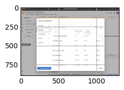